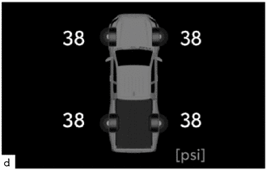
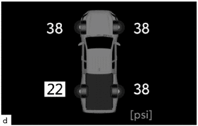
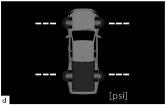

- Detects the tire inflation pressure and temperature of the tire and transmits the measured value and ID code to the tire pressure warning ECU and receiver.
- Transmits the acceleration rate signal from the built-in acceleration sensor to the tire pressure warning ECU and receiver to identify tire position.
| Last Modified: 10-07-2025 | 6.11:8.1.0 | Doc ID: RM100000002K0V3 |
| Model Year Start: 2024 | Model: Tacoma | Prod Date Range: [03/2024 - ] |
| Title: TIRE PRESSURE MONITORING: TIRE PRESSURE WARNING SYSTEM: TIRE PRESSURE WARNING CONTROL; 2024 - 2026 MY Tacoma Tacoma HV [03/2024 - ] | ||
TIRE PRESSURE WARNING CONTROL
FUNCTION OF MAIN COMPONENTS
|
Component |
Function |
|
|---|---|---|
|
*1: Gasoline models
*2: HEV models |
||
|
Tire Pressure Warning Valve and Transmitter |
|
|
|
Tire Pressure Warning ECU and Receiver |
|
|
|
Brake Actuator Assembly |
Skid Control ECU*1 |
Transmits the 4 wheel speed signal to the tire pressure warning ECU and receiver. |
|
No. 2 Skid Control ECU*2 |
||
|
Combination Meter Assembly |
Tire Pressure Warning Light |
Warns the driver by illuminating or blinking for 1 minute in accordance with the signal from the tire pressure warning ECU and receiver. |
|
Multi-information Display |
Displays the identified tire pressure and position to inform or warn the driver. |
|
|
Steering Pad Switch Assembly |
|
|
|
Central Gateway ECU (Network Gateway ECU) |
Gateway function of CAN communication. |
|
FUNCTION
(a) Tire Inflation Pressure Display Function
(1) The multi-information display shows the following to inform or warn the driver of the tire pressure.
|
Condition |
Multi-information Display* |
|---|---|
| *: These illustrations are examples. | |
|
Tire pressure is normal. |
 |
|
Tire pressure is below the warning threshold. (Normal warning) |
 |
|
Adjust Pressure |
|
|
Tire pressure is below the warning threshold. (Emergency warning) |
|
|
Immediately Check tire when Safe |
|
|
 |
(2) Identification of the tire position is carried out when the ignition switch is turned ON, initialization is performed, or the transmitter ID code is registered. However, under certain conditions, the tire position may not be displayed. In that case, radio wave conditions may be restored by continuously driving to enable the tire position determination.
(3) Identification of the tire positions is completed by driving the vehicle at 40 km/h (25 mph) or more for approximately 10 to 30 minutes. After completion, the tire pressure values are updated at intervals of approximately 1 minute. When the vehicle is stationary, the air pressure values are updated approximately once every 1.5 minutes.
(b) Warning Function
(1) When any of the following conditions are met, the tire pressure warning system illuminates the tire pressure warning light to warn the driver.
- Normal warning: when the tire pressure decreases to approximately 75% or less of the default tire pressure set during system initialization.
- Emergency warning: When the tire pressure
decreases rapidly (approximately 20 kPa or more over
a period of several minutes) and drops below
approximately 75% or less of the tire pressure when
warm.
HINT:
When driving for a certain period of time after the system has been initialized, the system corrects the tire pressure set during initialization according to the vehicle driving conditions and sets the tire pressure when warm.
(2) The tire pressure warning system has 3 warning methods that are used, depending on the condition detected.
(3) The table below shows the warning methods for the tire pressure warning light in the combination meter assembly and the multi-information display.
|
Detection Condition |
Tire Pressure Warning Light |
Multi-information Display*1 |
Meter Buzzer |
|---|---|---|---|
|
*1: These illustrations are examples.
*2: If the tire pressure warning light illuminates, adjust the tire pressure. *3: If the tire pressure warning light stays on after blinking for 1 minute, the system is malfunctioning and must be repaired in order to turn off the light. For details, refer to the Repair Manual. |
|||
|
The tire pressure warning system has detected that the tire pressure has become lower than the warning threshold. (Normal warning) |
Illuminates*2 |
Sounds |
|
|
Adjust Pressure |
|||
|
The tire pressure warning system has detected that the tire pressure has become lower than the warning threshold. (Emergency warning) |
Illuminates*2 |
Sounds |
|
|
Immediately Check tire when Safe |
|||
|
The tire pressure warning system has detected a malfunction in the system. |
Stays on after blinking for 1 minute*3 |
- |
|
(c) Initial Check Function
(1) After the ignition switch is ON, the tire pressure warning ECU and receiver illuminates the tire pressure warning light for 3 seconds to check the warning light circuits.
(d) Initialization Function
(1) The warning threshold and wheel position is calculated from the tire inflation pressure valve and wheel speed sensor at the time of initialization and memorized in the tire pressure warning ECU and receiver. Therefore, the tire pressure warning ECU and receiver should be initialized after:
- The recommended tire inflation pressure changes due to changes in vehicle weight, speed conditions or tire size.
- Tire pressure warning ECU and receiver or the tire pressure warning valve and transmitter are replaced.
- The tire pressure is adjusted.
(2) After the initialization operation has completed, the tire pressure warning ECU and receiver receives an initialization signal and the tire pressure warning light illuminates slowly 3 times.
(3) Before performing initialization, adjust the tire inflation pressure to the recommended pressure when the tires are cold. For details, refer to the Repair Manual.
(4) The initialization operation is not used to cancel the warning. The initialization operation is used to turn off the tire pressure warning light.
DIAGNOSIS
(a) To inform the driver when the tire pressure warning ECU and receiver detects a malfunction in the system, the tire pressure warning ECU and receiver will blink the tire pressure warning light for 1 minute, after which the light will stay on. It will also store the Diagnostic Trouble Codes (DTCs) in memory.
(b) The DTCs can be read by connecting a GTS to the DLC3. For details, refer to the Repair Manual.